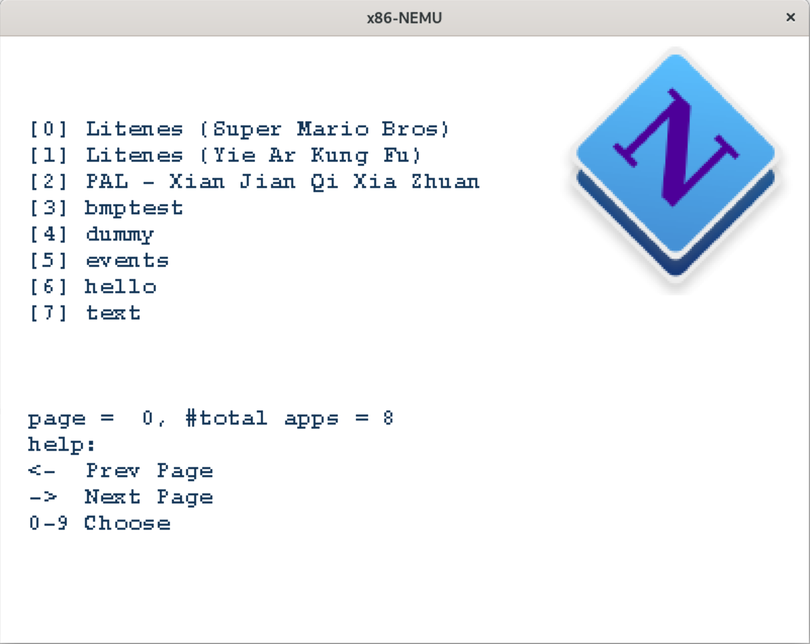
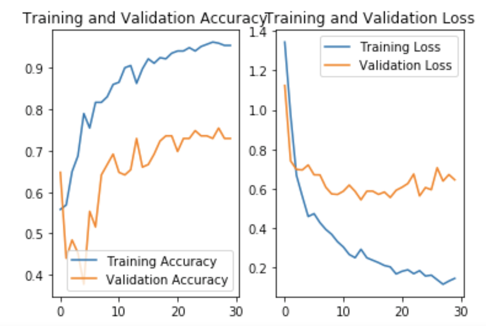

|
2018级本科生
计算机拔尖计划
GPA（总）: 4.38/5.00
GPA(核心)：4.33/5.00
排名(总): 36/97
匡亚明学院
南京大学
|

| 
|
尊敬的老师: 感谢您百忙中抽空阅读在下的个人简介。此个人网站或许能为您提供更多关于我的信息。
- [学生项目] 此部分包含 比较详细的描述 以及 可供下载的 部分本人参与过的项目;
- [杂项] 此部分包含本人一些多方面的课外兴趣爱好。
祝浏览愉快！ :)
个人信息
经过我在 南京大学的匡亚明学院一年的基础学科学习后（2018-2019），决定选择计算机方向作为我的专业。通过两年的问题求解系列课程以及其他专业课的训练，本人已经具备了计算机领域的相关基础知识，并且培养出了学习并解决问题的能力。我的英语能力较好，有能够阅读英文教材以及学术论文的能力，有小型英文论文写作经验。匡亚明学院是一个致力于培养交叉学科人才的学院，培养了我对多学科的兴趣。所以如果有机会的话，我也希望能够参与进交叉学科的研究当中，发挥我的一技之长。
[go top]
教育经历
1. 计算机拔尖培养计划, 南京大学 Sept, 2018 - present
2. 机器学习+深度学习线上暑期项目, MIT. Jul, 2020 - Aug, 2020
3. 商业与英国文化暑期项目，牛津大学 Herford College Jul, 2019 - Aug, 2019
[go top]
现有科研训练
1. 基于Sketch算法的网络测量与分析（进行中）
网络测量是在路由器等转发设备上对网络数据包进行采样、统计和分析的技术，通过网络测量提供的数据信息，网络管理者可以优化路由决策，辅助拥塞控制，执行异常检测等关键的计算机网络任务。传统的网络遥测和诊断技术灵活性低，拓展性差，难以应用在大规模网络环境。本项目旨在优化测量算法精度，降低测量算法开销，提高测量接口适配性，增强测量语言通用性以及提升测量任务的智能化配置程度，从而开发出智能高效的网络测量平台。
2. MCG媒体计算研究组（学习中）
环境感知研究需要集成各种技术，包括多媒体内容分类和处理，机器学习，建模和可视化，智能交互和大数据处理。媒体计算研究组（MCG）旨在研究环境感知技术并将其用于实际应用中。我目前正以本科生的身份在这个研究组中学习。我目前在该小组中的工作涉及：标记视频帧，...
[go top]
学生项目
- 2019年美国数学建模大赛
[论文下载]
大一第一学期参加的数学建模比赛，完成了自己小组合作的第一篇英文论文写作任务。
- 2019年数字逻辑电路设计课程相关实验：在FPGA开发版上完成的一些小实验
- CPU的设计
[实验报告下载]
- 电子琴设计
- 键盘设计
- etc.
- 2019-2020年计算机系统基础相关实验：
- 完成NEMU虚拟机的代码，并且能够运行游戏《仙剑奇侠传》。

- 完成os操作系统内核的代码，包括内存分配、多线程操作以及部分系统调用API。
- 2020年MIT暑期人工智能课程项目： [COVID-19 Detection from X-Ray Images]
使用简单的CNN神经网络对一组较小的胸片以及诊断结果进行学习，最终通过胸片判断患者有COVID-19的概率。

[go top]
奖项及荣誉
- 人民奖学金二等奖 2020
- 拔尖奖学金二等奖 2020
- 杨咏曼奖学金 2020
- 拔尖奖学金二等奖 2019
- 人民奖学金三等奖 2019
- 第16届南京大学程序设计大赛铜奖 2019
- 南京大学优秀学生会骨干 2019
- 美国数学建模大赛（MCM）成功参与奖 2019
- ... ...
[go top]
杂项
1. 匡亚明学院学生会副主席
我于2019年7月至2020年9月间担任匡亚明学院学生会媒体中心主管，即学生会副主席。媒体中心主要负责学院中的设计和宣传工作。我负责调度一个由媒体中心22人组成的小组，完成各种设计宣传类工作。我的主要贡献包括协助学生会各项重大活动的完成，这其中有第22、23届基础学科论坛（它是学校中由学生组织，学校认可的最大的论文竞赛），迎新晚会。另外我也负责微信公众号：[DII学生助手]的审稿工作，其中也有部分由我完成的内容。
[go top]